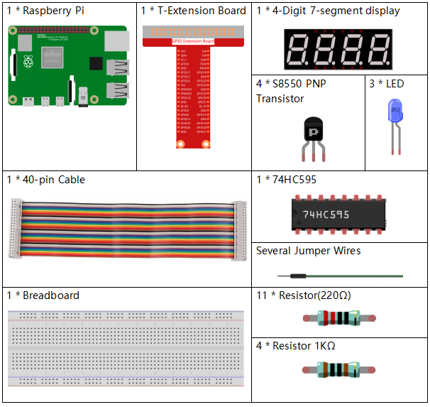

3.1.7 Traffic Light¶
Introduction¶
In this project, we will use LED lights of three colors to realize the change of traffic lights and a four-digit 7-segment display will be used to display the timing of each traffic state.
Components¶
Schematic Diagram¶
T-Board Name |
physical |
wiringPi |
BCM |
GPIO17 |
Pin 11 |
0 |
17 |
GPIO27 |
Pin 13 |
2 |
27 |
GPIO22 |
Pin 15 |
3 |
22 |
SPIMOSI |
Pin 19 |
12 |
10 |
GPIO18 |
Pin 12 |
1 |
18 |
GPIO23 |
Pin 16 |
4 |
23 |
GPIO24 |
Pin 18 |
5 |
24 |
GPIO25 |
Pin 22 |
6 |
25 |
SPICE0 |
Pin 24 |
10 |
8 |
SPICE1 |
Pin 26 |
11 |
7 |

Experimental Procedures¶
Step 1: Build the circuit.

For C Language Users¶
Step 2: Change directory.
cd /home/pi/davinci-kit-for-raspberry-pi/c/3.1.7/
Step 3: Compile.
gcc 3.1.1_CountingDevice.c -lwiringPi
Step 4: Run.
sudo ./a.out
As the code runs, LEDs will simulate the color changing of traffic lights. Firstly, the red LED lights up for 60s, then the green LED lights up for 30s; next, the yellow LED lights up for 5s. After that, the red LED lights up for 60s once again. In this way, this series of actions will be executed repeatedly.
Code Explanation
#define SDI 5
#define RCLK 4
#define SRCLK 1
const int placePin[] = {12, 3, 2, 0};
unsigned char number[] = {0xc0, 0xf9, 0xa4, 0xb0, 0x99, 0x92, 0x82, 0xf8, 0x80, 0x90};
void pickDigit(int digit);
void hc595_shift(int8_t data);
void clearDisplay();
void display();
These codes are used to realize the function of number display of 4-Digit 7-Segment Displays. Refer to chapter 1.1.5 of the document for more details. Here, we use the codes to display countdown of traffic light time.
const int ledPin[]={6,10,11};
int colorState = 0;
void lightup()
{
for(int i=0;i<3;i++){
digitalWrite(ledPin[i],HIGH);
}
digitalWrite(ledPin[colorState],LOW);
}
The codes are used to switch the LED on and off.
int greenLight = 30;
int yellowLight = 5;
int redLight = 60;
int colorState = 0;
char *lightColor[]={"Red","Green","Yellow"};
int counter = 60;
void timer(int timer1){ //Timer function
if(timer1 == SIGALRM){
counter --;
alarm(1);
if(counter == 0){
if(colorState == 0) counter = greenLight;
if(colorState == 1) counter = yellowLight;
if(colorState == 2) counter = redLight;
colorState = (colorState+1)%3;
}
printf("counter : %d \t light color: %s \n",counter,lightColor[colorState]);
}
}
The codes are used to switch the timer on and off. Refer to chapter 1.1.5 for more details. Here, when the timer returns to zero, colorState will be switched so as to switch LED, and the timer will be assigned to a new value.
void loop()
{
while(1){
display();
lightup();
}
}
int main(void)
{
//…
signal(SIGALRM,timer);
alarm(1);
loop();
return 0;
}
The timer is started in the main() function. In loop() function, use while(1) loop and call the functions of 4-Digit 7-Segment and LED.
For Python Language Users¶
Step 2: Change directory.
cd /home/pi/davinci-kit-for-raspberry-pi/python/
Step 3: Run.
sudo python3 3.1.7_TrafficLight.py
As the code runs, LEDs will simulate the color changing of traffic lights. Firstly, the red LED lights up for 60s, then the green LED lights up for 30s; next, the yellow LED lights up for 5s. After that, the red LED lights up for 60s once again. In this way, this series of actions will be executed repeatedly. Meanwhile, the 4-digit 7-segment display displays the countdown time continuously.
Code Explanation
SDI = 24 #serial data input(DS)
RCLK = 23 #memory clock input(STCP)
SRCLK = 18 #shift register clock input(SHCP)
number = (0xc0,0xf9,0xa4,0xb0,0x99,0x92,0x82,0xf8,0x80,0x90)
placePin = (10,22,27,17)
def clearDisplay():
def hc595_shift(data):
def pickDigit(digit):
def display():
These codes are used to realize the function of number display of 4-Digit 7-Segment. Refer to chapter 1.1.5 of the document for more details. Here, we use the codes to display countdown of traffic light time.
ledPin =(25,8,7)
colorState=0
def lightup():
global colorState
for i in range(0,3):
GPIO.output(ledPin[i], GPIO.HIGH)
GPIO.output(ledPin[colorState], GPIO.LOW)
The codes are used to switch the LED on and off.
greenLight = 30
yellowLight = 5
redLight = 60
lightColor=("Red","Green","Yellow")
colorState=0
counter = 60
timer1 = 0
def timer(): #timer function
global counter
global colorState
global timer1
timer1 = threading.Timer(1.0,timer)
timer1.start()
counter-=1
if (counter is 0):
if(colorState is 0):
counter= greenLight
if(colorState is 1):
counter=yellowLight
if (colorState is 2):
counter=redLight
colorState=(colorState+1)%3
print ("counter : %d color: %s "%(counter,lightColor[colorState]))
The codes are used to switch the timer on and off. Refer to chapter 1.1.5 for more details. Here, when the timer returns to zero, colorState will be switched so as to switch LED, and the timer will be assigned to a new value.
def setup():
# ...
global timer1
timer1 = threading.Timer(1.0,timer)
timer1.start()
def loop():
while True:
display()
lightup()
def destroy(): # When "Ctrl+C" is pressed, the function is executed.
global timer1
GPIO.cleanup()
timer1.cancel() #cancel the timer
if __name__ == '__main__': # Program starting from here
setup()
try:
loop()
except KeyboardInterrupt:
destroy()
In setup() function, start the timer. In loop() function, a while
True is used: call the relative functions of 4-Digit 7-Segment and LED
circularly.
Phenomenon Picture¶